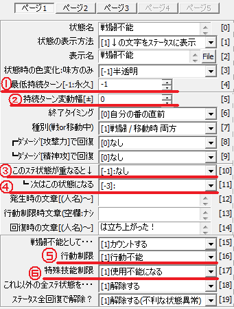

ステータス異常の情報はユーザデータベースの
8番「8:状態設定」に入っていますが、この中には
毒や麻痺を筆頭としたマイナスの状態のほかに、
防御や最大HP増加や攻撃強化といった、
プラス利用を目的としたステータス異常も入っています。
これらのプラスの効果があるものも「ステータス異常」なのでしょうか？
|
「ステータス異常」と聞くとマイナスイメージが強いですが、 「常と異なる」と書く通り、普通以外の状態(防御や力ためも含めて)、 戦闘不能まで含めてすべてがステータス異常です。 マイナス効果もプラス効果も、技能を受けるキャラクターに 付加されるので、たとえば「攻撃強化」状態を 付与する武器で敵を攻撃すると敵に攻撃強化状態がつきます。 ステータス状態の設定はユーザデータベースの8番 「8:状態設定」で行えます。ここで設定できることのうち、 よく使うものを【詳細】で見ていきましょう。 |
| 《ページ1》 ① 最低持続ターン[-1:永久] これは別名「基本ターン数」とも名づけられており、 基準となる持続ターン数です。ひとつ下の項目 「持続ターン変動幅[±]」によって、これより長くなったり 短くなったりします。-1を入力すると、ターン経過だけでは 回復しないステータス異常になります。0を入力すると、 与えたそのターンに回復するステータス異常になります。 ② 持続ターン変動幅[±] ひとつ上の項目「最低持続ターン[-1:永久]」が0以上のときに ステータス異常の持続ターン数にゆらぎを持たせる項目です。 ③ このｽﾃ状態が重なると↓ これはひとつ下の項目「┗ 次はこの状態になる」と対で 設定する項目です。戦闘不能と重なると治癒するよう 設定すれば、1度だけ戦闘不能を回避できるステータス異常に なります(HPが回復しないので瀕死ですが)。 ④ ┗ 次はこの状態になる ひとつ上の項目「┗ 次はこの状態になる」とセットで 設定する項目です。サンプルゲームでは、この2項目を 使って「力ため」に段階を設けています。 ⑤ 行動制限 麻痺状態や眠り状態のとき行動できなくなったり、 混乱状態のとき対象と行動内容を選べなくなったりといった 行動制限を設定する項目です。 味方（または敵）に特定のコマンドを使わせる機能もあるので、 工夫次第では味方の体力を吸収し続けるステータス異常「吸血鬼」や、 闇雲に敵に突進して反動でダメージを受けるステータス異常「暴走」 なども作ることができます。 ⑥ 特殊技能制限 いわゆる「魔法の使用が封印されて使えない」封印状態にする ステータス異常です。封印状態以外の状態異常は 「[0]制限なし」にしておきましょう。 |
 |
| 《ページ2》 ・HP増減±[%]/1ﾀｰﾝ終 ・HP増減±[固定]/1ﾀｰﾝ終 ・SP増減±[%]/1ﾀｰﾝ終 ・SP増減±[固定値]/1ﾀｰﾝ終 この4項目は、徐々に体力が減っていく毒状態や、 RPGによってはリジェネレイトなどと呼ばれていたりする、 毎ターン徐々に数値が回復していくようなステータス異常に 設定できる項目です。この項目で徐々に回復・減少するのは 最大HP・SPではなく、現在HP・SPです。 ・敵からの狙われ度 「[1]前攻撃が集中」に設定すると、全体攻撃を受けた時でさえも このステータス異常のかかったキャラクターにしか当たらなくなります。 「[-1]狙われない[※当たる]」と「[-2]狙われず＆全無効化」は 表記の通りの効果があります。 サンプルゲームでは「隠れる」「引きつける」にこの設定が使われています。 |
＜執筆者：ウディタ公式ガイド執筆コミュ。＞